Reproducing the Second Dimension of Spatial Association (SDA)
A complete walkthrough of the SDA model — which builds explanatory
variables from the geographical environment around the samples rather than only at them —
from raw data to manuscript. The method is implemented here in a single self-contained R file
that needs no package at all.
R/ pipeline scripts including the complete method in
R/02-sda-core.R · config/project-config.R · data/
(614 samples, 68,757 grid cells, the published variable sets) · tests/ ·
run-all.R — unzip and run Rscript run-all.R test from the
SDA/ folder root.
To cite the SDA model and its R packages and codes in publications, please use:
Song Y (2022). The second dimension of spatial association.
Int J Appl Earth Obs Geoinf 111:102834.
doi ·
PDF
Wang X, Wu Y, Shi T, et al. (2026). Explainable second-dimension
spatial association between park sentiment and built-social environments.
PDF
Ren K, Song Y, Yu Q (2025). Second-dimension outliers for spatial
prediction. IJGIS.
PDF
Ren K, Song Y, Yang X, et al. (2026). Spatial outliers as a pattern
determinant for explaining heterogeneity. IJGIS.
PDF
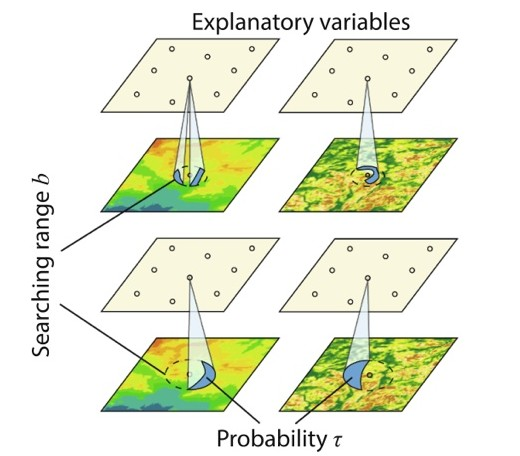
1 Method Overview & Reproduction Scope
1.1 Core Idea
Almost every model of spatial association reads its explanatory variables at the sample
locations: one soil sample, one elevation value, one NDVI value, taken at that exact point.
Song (2022) names this the first dimension of spatial association (FDA) and observes what
it throws away — everything the environment is doing in the neighbourhood around the
sample. A grid of 68,757 cells sits under 614 samples in the demo below, and the first dimension
uses 614 of those cells.
The second dimension of spatial association (SDA) uses the rest. Around each sample it
draws a circle of radius b, takes every grid cell inside, and summarises that local
distribution at a quantile τ. Each pair (b, τ) becomes one explanatory
variable: the τ-quantile of this surface within b km of the sample. A single surface
therefore yields a whole family of variables describing the neighbourhood at several ranges and
several parts of its distribution, and the data decide which of them matter.
Research problem: information at locations outside the samples is missing from
models built on sample values, even when a dense grid of that information is available.
One-line contribution: SDA turns the geographical environment around each sample
into explanatory variables indexed by a searching range b and a quantile τ,
then selects among them, so spatial association is explored in a second dimension rather
than only at points.
Why it matters: on the same samples, the same split and the same models, the second
dimension predicts trace-element concentration substantially better than the first — in
the demo below, R² rises from 0.242 to 0.300 for a linear model and 0.275 to 0.333 for a
random forest.
Published reference · SDA
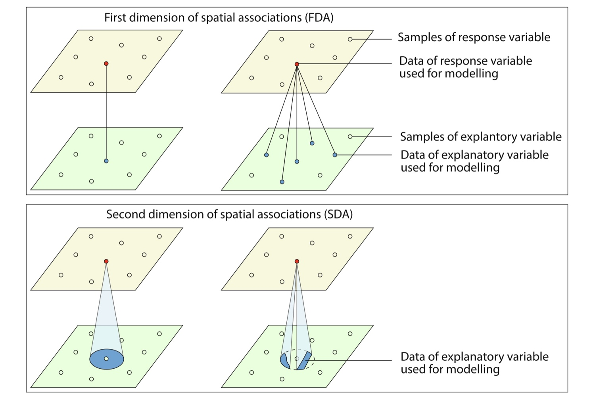
SDA paper Fig. 1 — the whole idea in one picture. Above: the first dimension links
a response sample to explanatory values at the same points. Below: the second dimension
opens a cone from the sample down onto the explanatory surface and summarises everything inside
it, so information from locations that were never sampled enters the model.
Song (2022), Int J Appl Earth Obs Geoinf 111:102834 (CC BY-NC-ND).
◆Reader anchor
A sample is a point, but the process that produced it is not. Read the environment around
each sample at several ranges b and several quantiles τ → each (b, τ)
is a candidate variable → select among them → compare against the same model built from
point values alone. Everything on this page serves that line.
✓What you need
R 4.1+ and the folder from the download button. The method itself is
R/02-sda-core.R, about 120 lines of base R with no package dependency at
all; ggplot2 and randomForest are used only for the figures and
the second model, and every step says so and carries on if they are absent. The full
pipeline runs in about 6 seconds.
1.2 Method Logic
SDA is the root of a small family of methods. The idea of looking outside the samples was
introduced for spatial prediction, then extended to explanation, to outliers, and to
heterogeneity:
SDA 2022second-dimension variables from (b, τ); prediction Song, JAG · PDFCC BY-NC-ND
→
ESDA 2026explainable SDA: nonlinear, quantile-asymmetric drivers Wang, Wu et al.
SOH 2026outlier-driven heterogeneity; has its own tutorial SOH tutorial · PDF
Published reference · SDA
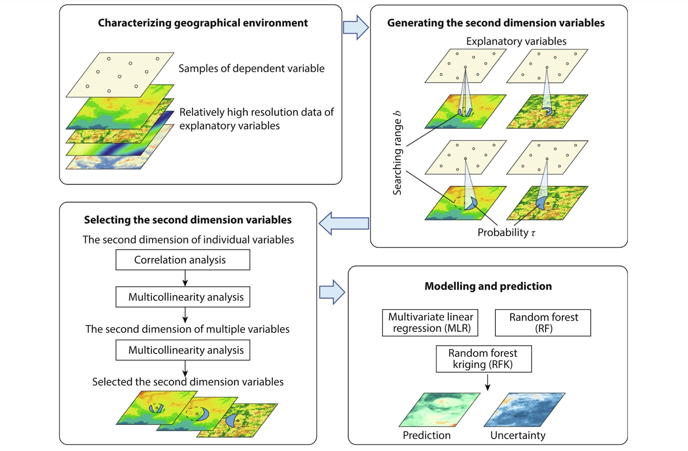
SDA paper Fig. 2 — the second dimension model (SDM), and the plan of §3 of this
page: characterise the environment on a fine grid, generate variables over the (searching
range b, probability τ) grid, select them in two stages by correlation and
multicollinearity, then model and predict. Click to enlarge.Published reference · SDO
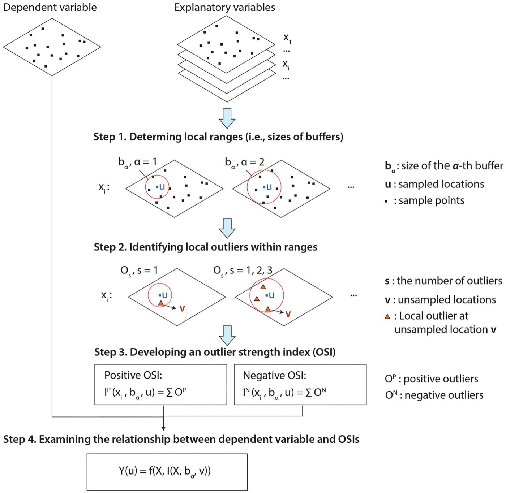
SDO paper Fig. 1 — the same second-dimension geometry, but summarising the
outliers in each neighbourhood instead of its quantiles (Ren, Song & Yu 2025).
Key concepts and equations
A second-dimension variable. For sample i, surface X, searching range
b and quantile τ:
Xb,τi = Quantileτ { X(s) : d(s, i) < b }
the τ-quantile of the surface over every grid cell s within b of the sample.
τ = 0 is the local minimum, τ = 1 the local maximum, τ = 0.5 the
local median. With nb ranges and nτ quantiles a surface
produces nb × nτ variables — 55 in the demo.
The first dimension is the limiting case. As b → 0 the circle
contains only the sample's own cell and every quantile collapses to the point value, so FDA
is SDA at zero range. The comparison in §3.4 is therefore between a model and its own
restriction, not between two unrelated models.
Selection. Candidates are ranked by |correlation with the response| and walked down
that order, dropping any variable that pushes the variance inflation factor above a
threshold:
VIFj = 1 / (1 − R²j), R²j = 1 − SSEj / SSTj
This matters more here than in an ordinary regression: neighbouring buffers and neighbouring
quantiles describe almost the same neighbourhood, so the 440 candidates are collinear by
construction.
1.3 Reproduction Scope
Everything tagged Demo run regenerates from this folder; everything tagged
Published reference is a static image from the source articles. The demo runs end
to end with R 4.6.0, and it reproduces the published result twice over: the
generated variables are identical to the published values, and selecting from all 440 candidates
returns exactly the ten variables of the paper's Fig. 5(a).
Item
Demo template
Published reference
Data
614 soil samples (Cr, Cu) and a 68,757-cell grid, with eight environmental surfaces
(data/)
the same geochemical case, distributed with the method
Method
R/02-sda-core.R — generation, VIF, selection, prediction alignment,
outliers, in base R
The second dimension travels from geochemistry to sentiment to agriculture; only
the response and the surfaces change.
How to use this page
To reproduce the demo: the folder holds the method, the pipeline, the data and the
tests. Run Rscript run-all.R test, then Rscript run-all.R.
To use the method on your own problem: §2.2 prints the whole implementation, so you
can paste it into your own script; §2.4 gives the data contract and §4.1 the porting
steps.
To write the paper: §4.2 maps every result file to a manuscript element.
2 Setup, Code & Data
2.1 Environment & Dependencies
The method needs nothing. R/02-sda-core.R is written in base R, so
source() it and the whole of SDA is available. The pipeline around it uses three
optional packages, and each step reports and continues if one is missing.
R console — optional, for the figures and the second model
# Figures
install.packages(c("ggplot2", "ggrepel"))
# The random-forest arm of the cross validation
install.packages("randomForest")
# Optional: used for distances when present. The built-in haversine in
# 02-sda-core.R agrees with it to 1e-6 m, and tests/test-01 checks that.
install.packages("geosphere")
The method is dependency-free by design, so it can be dropped into any project.
!This tutorial does not call the SecDim package
SDA was released as the R package SecDim,
and the implementation below follows it function for function — the generated variables are
identical to the values it ships (§3.2). It is reimplemented here for two reasons: the code
then has no dependency and can be pasted into any script, and two defects in
SecDim 3.2 are corrected. Both are silent — they fit without complaint and
damage only prediction on new data — so they are described where the corresponding function
appears below.
2.2 The Method in One File
The whole of SDA is printed here so it can be copied out and used directly; it is also
R/02-sda-core.R in the download, and the two are the same file. Four pieces:
generation, the variance inflation factor, selection, and outliers.
Generating second-dimension variables
The heart of the method. For each sample, distances to every grid cell; for each searching
range b, the cells inside; for each quantile τ, one number. Columns come back named
b5t0.7 — the 0.7 quantile within 5 km — so a variable's parameters are legible
from its name for the rest of the analysis.
R/02-sda-core.R — great-circle distance and second-dimension variables
# -- Great-circle distance ----------------------------------------------------
# Metres between one point (lon, lat) and a matrix of points, on a sphere of
# radius r. Matches geosphere::distHaversine(..., r = 6378137).
sda_haversine <- function(p, pts, r = 6378137) {
d2r <- pi / 180
lon1 <- p[[1]] * d2r; lat1 <- p[[2]] * d2r
lon2 <- pts[[1]] * d2r; lat2 <- pts[[2]] * d2r
dlon <- lon2 - lon1; dlat <- lat2 - lat1
a <- sin(dlat / 2)^2 + cos(lat1) * cos(lat2) * sin(dlon / 2)^2
2 * r * asin(pmin(1, sqrt(a)))
}
# -- 1. Second-dimension variables --------------------------------------------
#' Generate second-dimension variables for one grid surface.
#'
#' For every sample point, the value of a grid variable is summarised over the
#' locations *around* the sample — the second dimension. Each buffer radius b
#' (km) and quantile probability tau gives one variable, so a surface yields
#' length(distbuf) x length(quantileprob) columns named b<b>t<tau>.
#'
#' pointlocation data.frame/matrix of sample coordinates (lon, lat)
#' gridlocation data.frame/matrix of grid coordinates (lon, lat)
#' gridvar numeric vector of the grid variable, one value per grid cell
#' distbuf buffer radii in km
#' quantileprob quantile probabilities in [0, 1]
#' Returns the point coordinates column-bound to the generated variables.
sda_variables <- function(pointlocation, gridlocation, gridvar,
distbuf = seq(1, 10, 1),
quantileprob = seq(0, 1, 0.1),
verbose = FALSE) {
samples <- as.data.frame(pointlocation)
grids <- as.data.frame(gridlocation)
if (nrow(grids) != length(gridvar))
stop("gridvar must have one value per row of gridlocation")
nbuf <- length(distbuf); nprob <- length(quantileprob)
out <- data.frame(matrix(NA_real_, nrow(samples), nbuf * nprob))
names(out) <- paste0(rep(paste0("b", distbuf), each = nprob),
rep(paste0("t", quantileprob), times = nbuf))
use_geosphere <- requireNamespace("geosphere", quietly = TRUE)
maxbuf <- max(distbuf)
for (i in seq_len(nrow(samples))) {
zi <- if (use_geosphere) {
geosphere::distHaversine(samples[i, ], grids, r = 6378137) / 1000
} else {
sda_haversine(samples[i, ], grids) / 1000
}
# One pass per buffer: cells inside b, then the requested quantiles.
vals <- numeric(0)
for (b in distbuf) {
inb <- which(zi < b)
q <- if (length(inb) > 0) {
as.numeric(stats::quantile(gridvar[inb], quantileprob, na.rm = TRUE))
} else {
rep(NA_real_, nprob)
}
vals <- c(vals, q)
}
out[i, ] <- vals
if (verbose && i %% 100 == 0)
cat(sprintf(" ...%d / %d points\n", i, nrow(samples)))
}
cbind(pointlocation, out)
}
The variance inflation factor
Selection leans on the VIF, so it has to be right. R²j must be measured against
the total sum of squares of the observed column.
R/02-sda-core.R — variance inflation factor
# -- 2. Variance inflation factor ---------------------------------------------
#' VIF of every column of x, computed with base-R least squares.
#' VIF_j = 1 / (1 - R^2_j) where R^2_j regresses column j on the others.
sda_vif <- function(x) {
x <- as.data.frame(x)
nx <- ncol(x)
if (nx < 2) return(stats::setNames(rep(1, nx), names(x)))
vapply(seq_len(nx), function(j) {
y <- x[[j]]
X <- cbind(1, as.matrix(x[, -j, drop = FALSE]))
fit <- tryCatch(stats::lm.fit(X, y), error = function(e) NULL)
if (is.null(fit)) return(Inf)
r2 <- 1 - sum(fit$residuals^2) / sum((y - mean(y))^2)
if (!is.finite(r2) || r2 >= 1) Inf else 1 / (1 - r2)
}, numeric(1))
}
!Correction 1 — the VIF is one too small in SecDim 3.2
SecDim::vif() defines R2(o, p) = 1 - sum((o-p)^2)/sum((o-mean(o))^2)
and then calls it as R2(fitted, observed). With the arguments that way round the
denominator becomes the sum of squares of the fitted values, so it returns
1 − SSE/SSR instead of 1 − SSE/SST. Because SST = SSR + SSE
for a least-squares fit with an intercept, the result is exactly one less than the
variance inflation factor:
VIFSecDim = SSR/SSE = (SST − SSE)/SSE = VIF − 1
Verified to 2×10⁻¹⁴ across random datasets. The consequence is mild but worth stating: a
threshold of 10 there behaves like a threshold of 11 here, keeping slightly more collinear
variables. tests/test-02 locks the standard definition.
Selecting variables, and keeping the names attached to the values
Candidates are ranked by |correlation with the response|, then walked down that order,
dropping any that pushes the VIF above the threshold. sda_select() does this within
each surface first, so no single surface can flood the model, then again across the survivors.
sda_newdata() labels a full variable set the same way, which is what makes
prediction on new data line up.
R/02-sda-core.R — variable selection and prediction alignment
# -- 3. Variable selection ----------------------------------------------------
#' Select variables from one set: order by |correlation with y|, then walk down
#' that order dropping any variable that pushes the VIF above ctr.vif.
#'
#' NOTE. The returned columns keep the names of the columns they actually hold.
#' This matters: a selection that returns correctly-ordered values under the
#' wrong names still fits, because the fitted values are self-consistent, but
#' predict() on new data matches columns *by name* and would then read the wrong
#' variable — silently, and catastrophically.
sda_select_one <- function(y, x, ctr.vif = 10) {
x <- as.data.frame(x)
keep <- vapply(x, function(v) stats::sd(v, na.rm = TRUE) > 0, logical(1))
x <- x[, keep, drop = FALSE]
if (ncol(x) == 0) stop("no variable in x has non-zero variance")
cors <- abs(stats::cor(cbind(y, x), method = "pearson")[1, -1])
xs <- x[, rev(order(cors)), drop = FALSE] # strongest correlation first
nxs <- ncol(xs)
if (nxs == 1) return(xs)
drop <- integer(0)
for (i in 2:nxs) {
k <- seq_len(i)
if (length(drop) > 0) k <- setdiff(k, drop)
if (length(k) < 2) next
if (max(sda_vif(xs[, k, drop = FALSE])) > ctr.vif) drop <- c(drop, i)
}
kept <- setdiff(seq_len(nxs), drop)
out <- xs[, kept, drop = FALSE]
names(out) <- names(xs)[kept] # names follow the content
out
}
#' Select across several variable sets: choose within each set first (so no one
#' surface can flood the model), prefix the survivors by set, then select again
#' across the pooled survivors.
sda_select <- function(y, xlist, ctr.vif = 10) {
if (!is.list(xlist)) xlist <- list(xlist)
nms <- names(xlist)
if (is.null(nms)) nms <- paste0("v", seq_along(xlist))
if (length(xlist) == 1) {
out <- sda_select_one(y, xlist[[1]], ctr.vif)
names(out) <- paste0(nms[1], "_", names(out))
return(out)
}
per_set <- lapply(seq_along(xlist), function(i) {
d <- sda_select_one(y, xlist[[i]], ctr.vif)
names(d) <- paste0(nms[i], "_", names(d))
d
})
sda_select_one(y, do.call(cbind, per_set), ctr.vif)
}
#' Name a full variable list the same way sda_select() does, so that new data
#' lines up with a fitted model column for column.
sda_newdata <- function(xlist) {
if (!is.list(xlist)) xlist <- list(xlist)
nms <- names(xlist)
if (is.null(nms)) nms <- paste0("v", seq_along(xlist))
out <- lapply(seq_along(xlist), function(i) {
d <- as.data.frame(xlist[[i]])
names(d) <- paste0(nms[i], "_", names(d))
d
})
do.call(cbind, out)
}
!Correction 2 — column names must follow the values they label
SecDim::selectvarlm() sorts the candidates by correlation into x3,
keeps positions xk of that sorted frame, and then labels the result with
names(x)[xk] — the names of the unsorted frame. The returned data frame
therefore carries the values of one variable under the name of another.
Nothing complains. The fitted model is internally consistent, because the values are, and
the fit statistics look normal. But predict() matches new data by name,
so on a test set the model reads the wrong columns. Running the package vignette's own
cross-validation section verbatim returns
R² = −1,569,973, with all 185 predictions landing between 778 and 1366 for a
response that spans 3.0 to 6.7. The fix is names(x3)[xk] — take the names from
the frame the values came from — which is what sda_select_one() does above, and
what makes the cross validation in §3.4 work at all. tests/test-02 asserts that
every returned column equals the variable it is named after.
Outliers
R/02-sda-core.R — outliers
# -- 4. Outliers --------------------------------------------------------------
#' Positions of values beyond coef standard deviations from the mean (or NA).
sda_rmoutlier <- function(x, coef = 2.5) {
m <- mean(x, na.rm = TRUE); s <- stats::sd(x, na.rm = TRUE)
which(is.na(x) | x > m + coef * s | x < m - coef * s)
}
Calling it: the whole method in one screen
With the file above sourced, a complete SDA analysis — generate, select, fit, predict, compare
against the first dimension — is the block below. It uses the data in data/ and
reproduces the headline numbers of §3.4, and it is the only code a reader needs in order to
apply the method to their own tables.
R — a complete SDA analysis, start to finish
source("R/02-sda-core.R") # the method: no package required
## 1. Data ------------------------------------------------------------------
pts <- read.csv("data/obs.csv") # samples: Lon, Lat, Cr_ppm
grd <- read.csv("data/grids.csv") # grid: Lon, Lat, Elevation
pts$y <- log(pts$Cr_ppm) # right-skewed response
## 2. Build the second dimension --------------------------------------------
## One variable per (searching range b, quantile tau); 5 x 11 = 55 per surface.
elev <- sda_variables(pts[, c("Lon", "Lat")],
grd[, c("Lon", "Lat")], grd$Elevation,
distbuf = c(1, 3, 5, 7, 9),
quantileprob = seq(0, 1, 0.1))[, -(1:2)]
## The published case uses eight surfaces; seven are supplied pre-generated.
surfaces <- c("Elevation","Slope","Aspect","Water","NDVI","pH","SOC","Road")
x <- lapply(surfaces, function(v)
read.csv(sprintf("data/reference/sda-%s.csv", tolower(v))))
names(x) <- surfaces
## 3. Split, and drop outliers from the TRAINING response only ---------------
set.seed(100)
train <- sample(nrow(pts), floor(0.7 * nrow(pts)))
krm <- sda_rmoutlier(pts$y[train]) # 2.5 SD
keep <- if (length(krm)) train[-krm] else train
ytr <- pts$y[keep]; yte <- pts$y[-train]
## 4. Select on the training data, then align the test data ------------------
sel <- sda_select(ytr, lapply(x, function(m) m[keep, ]), ctr.vif = 10)
newx <- sda_newdata(lapply(x, function(m) m[-train, ]))[, names(sel)]
## 5. Fit, predict, and compare with the first dimension ---------------------
r2 <- function(o, p) 1 - sum((o - p)^2) / sum((o - mean(o))^2)
sda.lm <- lm(y ~ ., cbind(y = ytr, sel))
r2(yte, predict(sda.lm, newdata = newx)) # 0.3002
fda <- read.csv("data/sample-vars-fda.csv") # the same surfaces AT the points
fda.lm <- lm(y ~ ., cbind(y = ytr, fda[keep, ]))
r2(yte, predict(fda.lm, newdata = fda[-train, ])) # 0.2422
✓The one habit that keeps SDA honest
Select on the training data, then build the test matrix with
sda_newdata(...)[, names(sel)]. Selecting on everything leaks the test set into
the choice of variables and inflates R²; subsetting new data by names(sel) is
what guarantees the model reads the same variables it was fitted on.
2.3 Project Structure & Configuration
One entry script runs the five pipeline steps, the figures, or the tests. Each step reads what
the previous one wrote, so any step can be re-run after a config change.
folder tree
SDA/
├── sda.html # this guide
├── run-all.R # entry point: full run, single steps, figures, test
├── R/
│ ├── 00-config.R, 01-helpers.R # paths, IO, logging
│ ├── 02-sda-core.R # THE METHOD — base R, no dependency
│ ├── 10-prepare-data.R # read points and grid, transform the response
│ ├── 20-generate-sdvars.R # build the second dimension, check against published
│ ├── 30-select-variables.R # rank by correlation, drop collinearity
│ ├── 40-cross-validation.R # SDA vs FDA, linear model and random forest
│ ├── 50-buffer-sensitivity.R # which searching range carries the signal
│ ├── 90-tables.R # LaTeX tables + session info
│ └── p01 … p03 # figure scripts
├── config/project-config.R # the ONLY file to edit for a new domain
├── data/
│ ├── obs.csv # 614 samples: Lon, Lat, Cr_ppm, Cu_ppm
│ ├── grids.csv # 68,757 grid cells: Lon, Lat, Elevation
│ ├── sample-vars-fda.csv # the eight surfaces AT the sample points
│ └── reference/sda-*.csv # published second-dimension variables (8 x 55)
├── tests/ # test-01 reproduces published values and selection
├── env/ # requirements.md, session-info.txt
├── results/ tables/ figs/ # generated output, never hand-edited
Main configuration file
config/project-config.R (key lines)
POINT_FILE <- "data/obs.csv" # samples: coordinates + response
GRID_FILE <- "data/grids.csv" # the surface(s) covering the study area
LON <- "Lon"; LAT <- "Lat"
RESPONSE <- "Cr_ppm" # dependent variable
LOG_RESPONSE <- TRUE # log-transform a right-skewed response
OUTLIER_SD <- 2.5 # drop TRAINING values beyond this many SD
DIST_BUFFERS <- c(1, 3, 5, 7, 9) # b, km — how far outside the sample to look
QUANTILES <- seq(0, 1, 0.1) # tau — which part of the local distribution
GRID_SURFACES <- c("Elevation") # surfaces to generate from GRID_FILE
REFERENCE_VARS <- c("Elevation","Slope","Aspect","Water","NDVI","pH","SOC","Road")
VIF_MAX <- 10 # multicollinearity threshold
TRAIN_FRACTION <- 0.7
SEED <- 100
Parameter
Default
Origin / rationale
DIST_BUFFERS
1, 3, 5, 7, 9 km
the searching ranges of Song (2022); Step 5 shows what each one contributes
QUANTILES
0 … 1 by 0.1
the whole local distribution, from minimum to maximum
VIF_MAX
10
the conventional threshold; essential here because neighbouring (b, τ) pairs are near-duplicates
OUTLIER_SD
2.5
applied to the training response only, so the test set stays as observed
Free parameters and the published rules they follow.
2.4 Data Contract
SDA needs two tables. The point table is the usual one; the grid table is what makes the
method possible, and it should be as dense and as wide as the study area allows — it is the
information the first dimension discards.
Table
Columns
Meaning
Required?
POINT_FILE
Lon, Lat
sample coordinates in degrees
yes
RESPONSE
the dependent variable
yes
GRID_FILE
Lon, Lat
grid cell coordinates in degrees
yes
one column per surface
the environment to summarise around each sample
≥ 1
Coordinates are in degrees because distances are computed on a sphere; column
names are declared in the config, not hard-coded.
SampleID
Lon
Lat
Cr_ppm
Cu_ppm
1
117.6417
−24.6643
223
64
2
117.6562
−24.5885
91
47
First rows of data/obs.csv (614 samples, Western Australia).
data/grids.csv carries the same coordinate columns plus Elevation
across 68,757 cells — 112 grid cells for every sample, which is the reservoir the second
dimension draws on and the first dimension leaves untouched.
!The grid decides what the method can see
Every second-dimension variable is a summary of grid cells, so a grid that is coarse
relative to the largest buffer gives quantiles computed from a handful of cells, and one that
does not extend past the sampled area gives truncated circles at the edges. Check the count
of cells falling inside your smallest buffer before trusting τ = 0 or
τ = 1: extreme quantiles are the first to become noisy when a neighbourhood is
thin.
3 Reproduction Pipeline, Results & Validation
3.1 Pipeline Execution
Five steps, three figure scripts and two test files run from one entry point. Every step
writes to results/, tables/, figs/ or
data/derived/ and reads what the previous step wrote.
Full run
Rscript run-all.R (~6 s)
Verification
Rscript run-all.R test — do this first
Output folders
results/ tables/ figs/ data/derived/
terminal
cd SDA # this folder
Rscript run-all.R test # 1. check the implementation against the published values
Rscript run-all.R # 2. full pipeline
Rscript run-all.R 30 40 # re-run single steps (10 20 30 40 50 90)
Rscript run-all.R figures # only the figure scripts
Project : sda-demo
Domain : geochemical mapping (trace elements)
== Step 1/5 Prepare data ======================================
samples: 614 rows | grid: 68757 cells (112x denser than the samples)
response 'Cr_ppm' log-transformed (skew 1.58 -> -0.85)
== Step 2/5 Generate second-dimension variables ================
b = {1, 3, 5, 7, 9} km x tau = {0, 0.1, ... 1} -> 55 variables per surface
Elevation 614 points x 68757 cells -> 55 variables in 2.3s
Elevation max |generated - published| = 2.27e-13 (identical)
cost is linear in sample size: 0.004 s per point on this grid
== Step 3/5 Select second-dimension variables =================
candidates: 8 surfaces x 55 variables = 440
selected 10 of 440 variables in 0.17s
surfaces represented: NDVI, pH, Road, SOC, Water
strongest: pH_b9t0.9 (r = 0.508)
== Step 4/5 Cross validation: SDA against FDA =================
SDA linear model R2 = 0.3002 RMSE = 0.6496
FDA linear model R2 = 0.2422 RMSE = 0.6760
SDA random forest R2 = 0.3325 RMSE = 0.6345
FDA random forest R2 = 0.2752 RMSE = 0.6611
== Step 5/5 Sensitivity to the searching range b ==============
best single searching range: b = 7 km (R2 = 0.3508)
Finished in 6.0 s
3.2 Reproduce the Published Values
The implementation is checked against the published method in two independent ways before any
result is believed.
The generated variables are the published variables
Regenerating Elevation's 55 second-dimension variables from obs.csv and
grids.csv reproduces the distributed values to 2×10⁻¹³ — floating-point noise, not
a difference in method. The built-in haversine also matches geosphere to 3×10⁻¹¹ m,
so the dependency-free path gives the same answer.
The selected variables are the published selection
The stronger check. Selecting from all 440 candidates returns exactly the ten variables of
Fig. 5(a) of Song (2022) — the same five surfaces, at the same searching ranges, at the same
quantiles. Nothing about that was fitted to match; it falls out of the correlation ranking and
the VIF walk.
Demo run
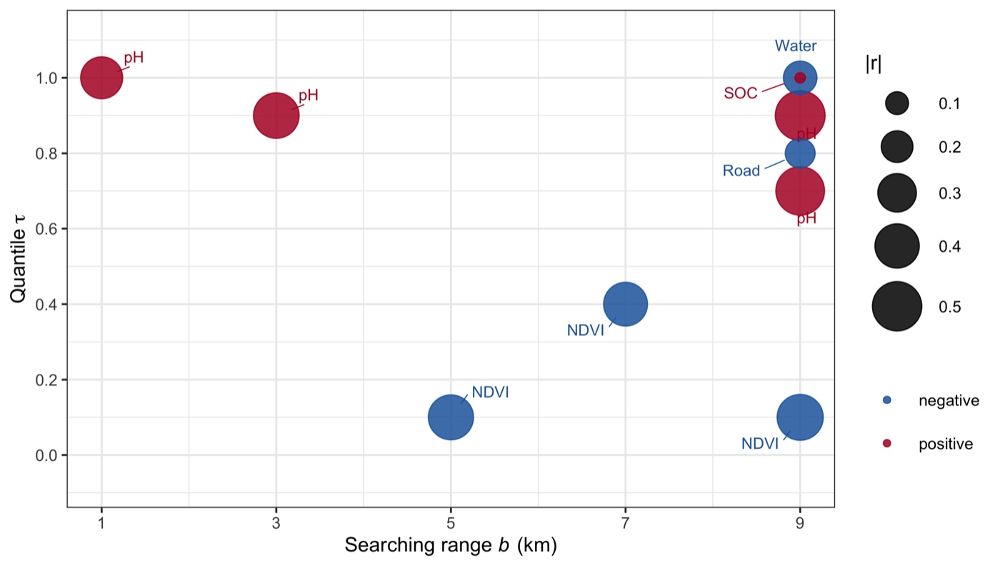
fig01 — the ten selected variables placed at their searching range and quantile,
sized by |correlation| and coloured by sign.Published reference · SDA
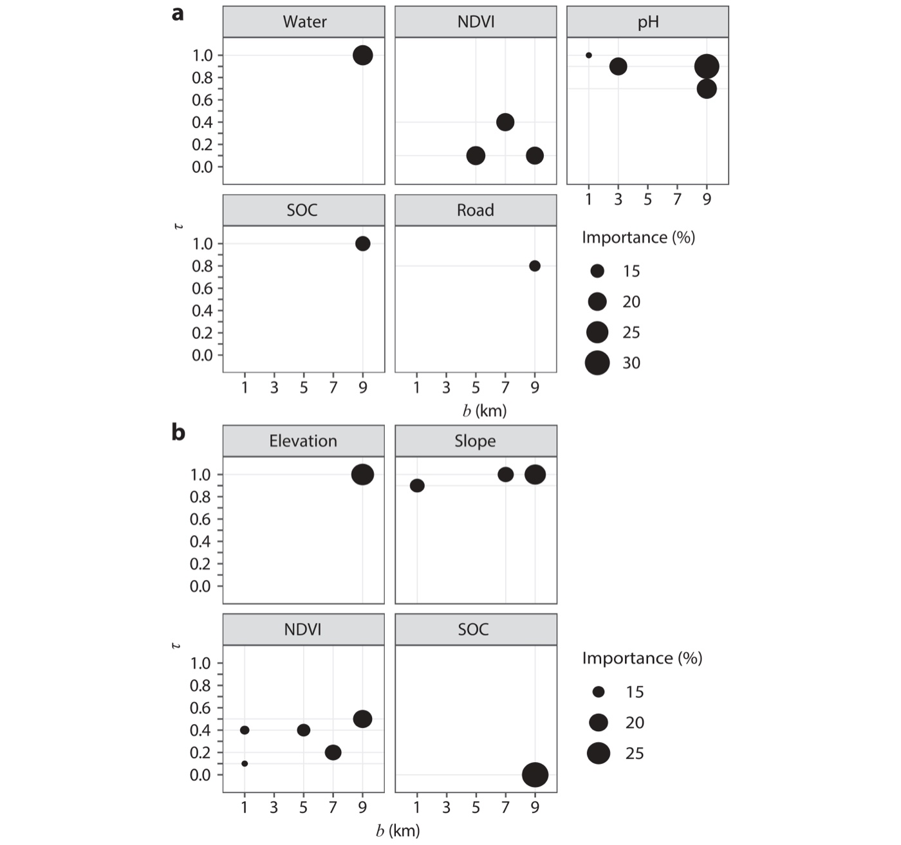
SDA paper Fig. 5 — panel (a) is Cr, the case reproduced here. Compare the
positions: pH at (1, 1.0), (3, 0.9), (9, 0.9) and (9, 0.7); NDVI at (5, 0.1), (7, 0.4) and
(9, 0.1); Water, SOC at (9, 1.0); Road at (9, 0.8).
Variable
Surface
b (km)
τ
r
In Fig. 5(a)
pH_b9t0.9
pH
9
0.9
0.508
yes
pH_b9t0.7
pH
9
0.7
0.485
yes
NDVI_b9t0.1
NDVI
9
0.1
−0.434
yes
pH_b3t0.9
pH
3
0.9
0.424
yes
NDVI_b5t0.1
NDVI
5
0.1
−0.416
yes
NDVI_b7t0.4
NDVI
7
0.4
−0.391
yes
pH_b1t1
pH
1
1.0
0.358
yes
Water_b9t1
Water
9
1.0
−0.224
yes
Road_b9t0.8
Road
9
0.8
−0.176
yes
SOC_b9t1
SOC
9
1.0
0.018
yes
results/selected-parameters.csv — ten of ten agree with the published
figure. tests/test-01 asserts the set equality, so any future edit to the method
that changes the selection is caught.
== test-01 Reproduce the published second-dimension variables ===========
generated variable count matches the published set pass
generated row count matches the sample count pass
values identical to published (max diff 2.27e-13) pass
built-in haversine matches geosphere (< 1e-6 m) pass
selection returns 10 variables, as published pass
the selected variables are exactly those of Fig. 5(a) pass
PASS - the implementation reproduces the published method
== test-02 Method properties ============================================
quantile 0 never exceeds quantile 1 pass
VIF equals 1/(1 - SSE/SST), not the fitted-value variant pass
every kept column carries the values of the variable it names pass
held-out predictions stay in the range of the response pass
...
15 passed, 0 failed
✓Checkpoint
21 checks pass: 6 against the published values, 15 on method properties. Two of the
property checks exist because of the defects described in §2.2 — they would both have passed
silently in a version that fits but cannot predict.
3.3 Core Analytical Steps
Five stages: purpose → code → output → result → how to read it. The step
numbers match the script numbers (Step 2 is R/20-generate-sdvars.R).
Step 1
Prepare data — the samples, the grid, and the response
What this step does
Reads both tables, checks the configured columns exist, and transforms the response. Trace
elements are right-skewed (Cr runs from 1 to 1048 ppm), so the response is logged, as in
the paper. Two samples at 1–2 ppm pull the logged distribution slightly the other way,
which is what the 2.5 SD outlier rule in Step 3 removes.
Code
terminal
Rscript run-all.R 10
Example output
== Step 1/5 Prepare data ======================================
samples: 614 rows | grid: 68757 cells (112x denser than the samples)
grid surfaces available: Elevation
response 'Cr_ppm' log-transformed (skew 1.58 -> -0.85)
response y: mean=4.963 sd=0.826 range=[0.000, 6.955]
wrote data/derived/points.csv (614 rows)
◆How to read this result
The 112× ratio is the opportunity. Every sample sits on one grid cell and
near 111 others. The first dimension uses one of them; the second dimension is a
rule for using the rest.
Log first, then everything else. Skew of 1.58 means a handful of samples
would dominate every correlation in the selection stage, and the quantile
structure the method depends on would be read through those few values.
Step 2 · the method
Build the second dimension
What this step does
For every sample, distances to all 68,757 grid cells; for each searching range, the cells
inside; for each quantile, one summary. 5 × 11 = 55 variables per
surface. The result is compared against the published values, and the cost is measured at
three sample sizes so a methods section can state how it scales.
== Step 2/5 Generate second-dimension variables ================
b = {1, 3, 5, 7, 9} km x tau = {0, 0.1, ... 1} -> 55 variables per surface
Elevation 614 points x 68757 cells -> 55 variables in 2.3s
wrote data/derived/sdvars-generated.csv (614 rows)
Elevation max |generated - published| = 2.27e-13 (identical)
cost is linear in sample size: 0.004 s per point on this grid
Demo run
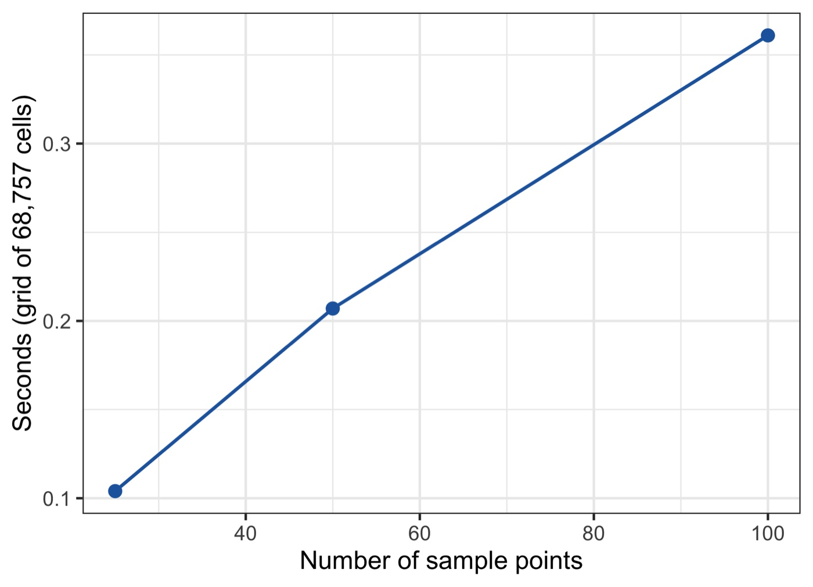
fig05 — generation time is linear in the number of samples: every sample needs
one distance pass over the grid, so cost is roughly (samples × grid cells).
◆How to read this result
Identical to 2×10⁻¹³ is the licence to continue. Everything downstream is a
claim about the published method rather than about a lookalike.
The cost is predictable, and it is the one thing that scales badly. 0.004 s
per sample on a 68,757-cell grid, linear in samples and linear in cells. Ten
thousand samples on this grid is about forty seconds per surface; a finer grid
multiplies that directly, which is the trade-off to state when choosing grid
resolution.
The buffers do the reusing. One distance pass serves every buffer and every
quantile, so adding more (b, τ) pairs is nearly free — it is the number of
samples and cells that costs, not the number of variables.
✓Checkpoint
results/generation-check.csv reports
identical_to_1e6 = TRUE before you trust any later number.
Step 3
Select variables — 440 candidates down to 10
What this step does
Eight surfaces × 55 (b, τ) pairs is 440 candidates for 614 samples, and they are collinear
by construction: the 0.5 quantile within 5 km and the 0.5 quantile within 7 km
describe nearly the same neighbourhood. Selection ranks by |correlation| and walks down that
order, dropping whatever pushes the VIF above 10 — within each surface first, then across the
survivors.
Code
R — from R/30-select-variables.R
krm <- sda_rmoutlier(pts$y, OUTLIER_SD) # 2.5 SD
y <- pts$y[-krm]
x <- lapply(xall, function(m) m[-krm, , drop = FALSE])
sel <- sda_select(y, x, ctr.vif = VIF_MAX) # 440 -> 10
The chosen quantiles are the extremes, not the middle. 0.9, 1.0, 0.1 —
the local maximum of pH, the local minimum of NDVI. What predicts Cr is not the
average condition around a sample but the most extreme condition in that
neighbourhood, which is exactly the information a point value cannot carry.
The chosen ranges are wide. Seven of the ten sit at b = 9 km,
the widest searched. The signal lives in the broad neighbourhood, and Step 5
puts a number on that.
Three surfaces are dropped entirely. Elevation, Slope and Aspect contribute
nothing for Cr once pH and NDVI are in — for Cu the paper's panel (b) selects
Elevation and Slope instead, so which surfaces matter is a property of the
response, not of the study area.
Selection is severe, and should be. 440 → 10 with 609 samples. Keeping more
would fit better and predict worse; the VIF walk is what stops neighbouring (b, τ)
pairs from entering as if they were independent evidence.
Step 4 · the core result
Cross validation — does the second dimension actually predict better?
What this step does
The same samples, the same 70/30 split, the same two models; only the explanatory
variables differ. Selection runs on the training set alone, and the test matrix is built with
sda_newdata() so the model reads the variables it was fitted on.
Code
R — from R/40-cross-validation.R
sel <- sda_select(ytr, xtr, ctr.vif = VIF_MAX) # training only
newx <- sda_newdata(xte)[, names(sel), drop = FALSE] # aligned test matrix
fit_eval("SDA", "linear model", lm(y ~ ., cbind(y = ytr, sel)), newx)
fit_eval("FDA", "linear model", lm(y ~ ., cbind(y = ytr, ftr)), fte)
fit_eval("SDA", "random forest", randomForest(x = sel, y = ytr), newx)
fit_eval("FDA", "random forest", randomForest(x = ftr, y = ytr), fte)
Example output
Dimension
Model
Variables
R²
RMSE
SDA
linear model
9
0.3002
0.6496
FDA
linear model
8
0.2422
0.6760
SDA
random forest
9
0.3325
0.6345
FDA
random forest
8
0.2752
0.6611
results/cross-validation.csv — 185 held-out samples. SDA improves
R² by 23.9% for the linear model and 20.8% for the random forest, and lowers RMSE in
both.
Demo run
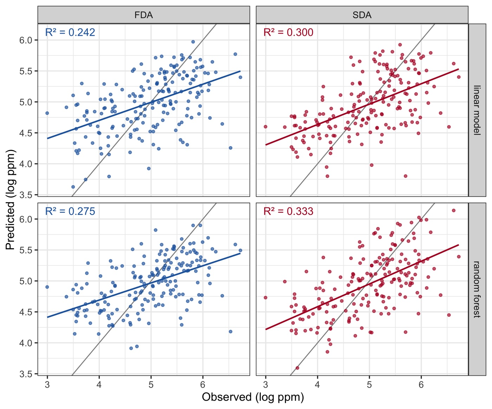
fig02 — the same test samples under both dimensions. The SDA clouds sit
closer to the 1:1 line and their fitted slopes are steeper.Published reference · SDA
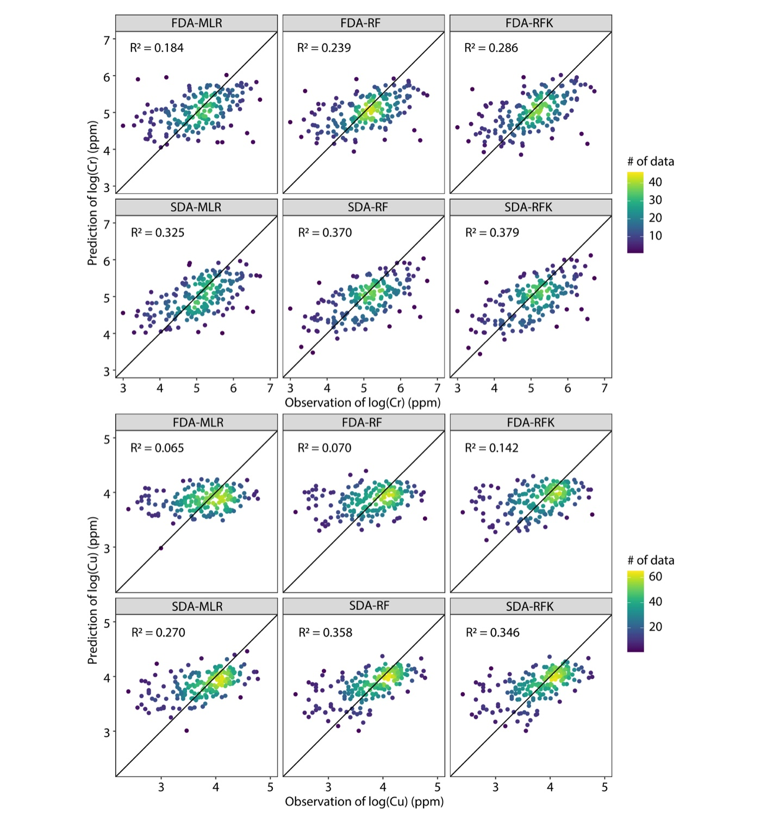
SDA paper Fig. 6 — the published counterpart, for Cr (top block) and Cu.
Every SDA panel beats its FDA panel: for Cr, MLR 0.184 → 0.325, RF
0.239 → 0.370, RFK 0.286 → 0.379.
◆How to read this result
The comparison is unusually clean. FDA is SDA at zero searching range, so
this is one method against its own restriction. The gap is what the neighbourhood
adds, not what a different model adds.
The gain survives a change of model. Linear +23.9%, random forest +20.8%.
A benefit that appears only under one learner is usually a quirk of that learner;
this one is in the variables.
Nine variables beat eight. The improvement is not from having more columns —
the counts are nearly the same. It is from those columns describing neighbourhoods
instead of points.
Absolute R² stays modest, and that is honest. ≈0.33 on held-out samples for
soil geochemistry from environmental surfaces alone. The published case reaches
0.325–0.379 for Cr with the same structure. SDA moves a weak predictor to a less
weak one; it does not manufacture a strong one.
✓Checkpoint
Predictions must land in the range of the response. If they run to hundreds, the test
matrix is misaligned with the fitted model — the failure mode described in §2.2, and the
reason sda_newdata() exists.
Step 5
Searching range — how far outside the samples is worth looking?
What this step does
b is the parameter that defines "outside", so it deserves a number rather than a
default. The model is rebuilt using one searching range at a time, across all eight surfaces.
Code
terminal
Rscript run-all.R 50
Example output
b (km)
Variables selected
R²
RMSE
1
13
0.2428
0.6757
3
17
0.2638
0.6663
5
15
0.3430
0.6294
7
10
0.3508
0.6256
9
5
0.3339
0.6337
results/buffer-sensitivity.csv — each row uses only the variables
generated at that searching range.
Demo run
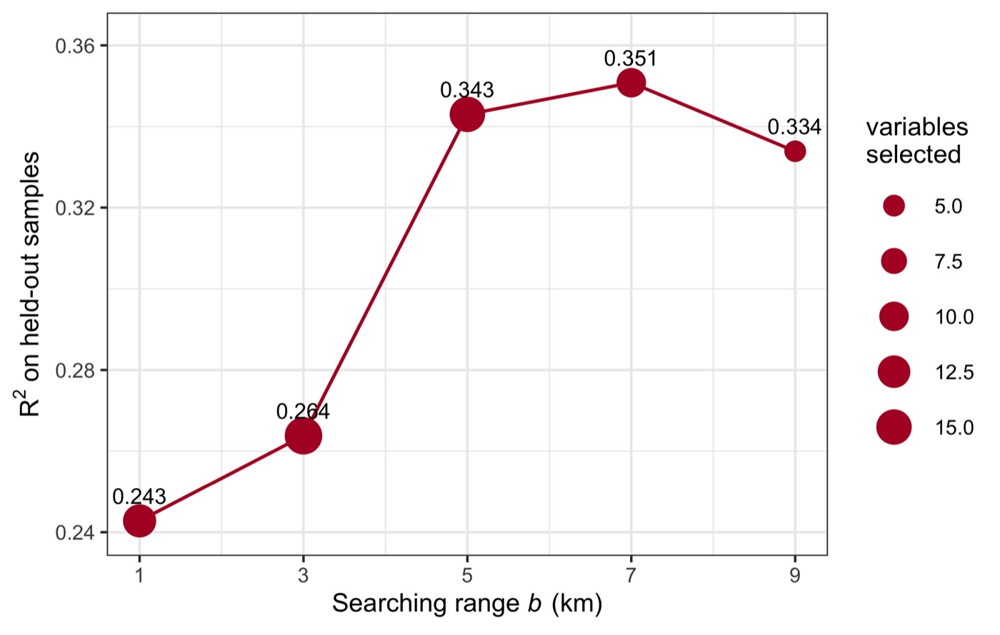
fig04 — R² against the searching range, point size showing how many variables
survived selection at that range.
◆How to read this result
This is the method's own argument, measured. At b = 1 km the
neighbourhood is barely wider than the sample and R² = 0.243 — statistically
the same as the first dimension's 0.242. Widen to 7 km and it reaches 0.351.
The gain comes from distance, not from having more columns.
It turns over. 9 km is worse than 7 km: eventually the circle
averages over land that has nothing to do with the sample. There is a scale that
matches the process, and this curve is how you find it rather than assume it.
Fewer variables survive at wide ranges. 13 at 1 km, 5 at 9 km —
wide neighbourhoods overlap between samples, so their variables are more collinear
with one another and the VIF walk discards more.
Report this curve. A single b with no sensitivity analysis is the first thing
a reviewer will question, and it costs one step to answer.
3.4 Reading the Results Together
Three findings, one argument: the information outside the samples is real, it is reachable,
and it is worth the cost of reaching it.
It reproduces
Generated variables identical
to the published values (2×10⁻¹³), and the selection returns exactly the ten variables of
Fig. 5(a).
It predicts better
R² 0.242 → 0.300
(linear) and 0.275 → 0.333 (random forest) on 185 held-out samples, with RMSE down
in both.
It has a scale
R² climbs from 0.243 at
b = 1 km to 0.351 at 7 km, then falls — the neighbourhood has a size, and
it is measurable.
Demo run
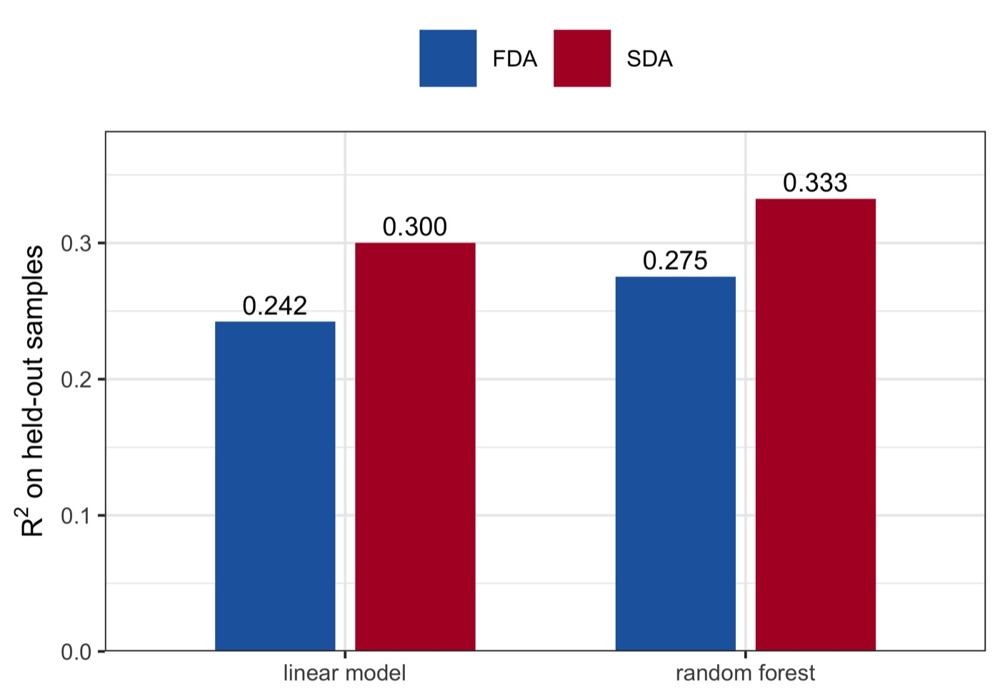
fig03 — the headline, both models: the second dimension is ahead of the first
whichever learner is used.
◆How to interpret — several angles
Mechanism. A sample's value is produced by processes with spatial extent —
drainage, weathering, land use. Reading one cell of a covariate records where the
sample sits; reading the distribution within b km records what the sample sits
in. The quantiles chosen here (local maxima of pH, local minima of NDVI) say
the informative feature is the extreme of the neighbourhood, which no point value
reports.
Why quantiles rather than a mean. A mean would compress each neighbourhood to
one number and lose exactly the asymmetry the selection is picking up. Sweeping τ from
0 to 1 lets the data say which part of the local distribution matters, and here it
answers "the tails".
Decision angle. If a dense covariate grid exists — remote sensing, terrain,
climate — the second dimension is close to free information: no new fieldwork, one
pass over the grid. If the grid is sparse or barely wider than the sample spacing,
there is nothing outside to read and FDA is the honest choice.
What SDA is not. It is not a spatial-autocorrelation model and it does not
interpolate the response; neighbouring responses are never used. It expands the
explanatory side only, so it composes with kriging or a spatial random effect rather
than replacing them — the published case adds kriging on top (RFK) and gains
again.
The cost is real and linear. One distance pass per sample over the whole grid.
Cheap here (2.3 s), not cheap for 10⁵ samples on a 10-m grid; that is the trade to
state in a methods section.
◆Reading order for your own run
1) results/generation-check.csv — is the generator faithful.
2) results/selected-parameters.csv — which surfaces, ranges and quantiles the
data chose, and whether the chosen τ are extremes or middles.
3) results/cross-validation.csv — the SDA-versus-FDA gap, on more than one
model. 4) results/buffer-sensitivity.csv — the scale of the neighbourhood.
4 Adaptation, Writing & Reproducibility
4.1 Port to Your Domain
Nothing in the method is specific to geochemistry. It needs a response at points and at least
one dense surface covering the area; the family shows how far that travels:
Domain
Response
Surfaces
Second dimension used for
Soil geochemistry (Song 2022 — this demo)
Cr, Cu concentration
terrain, NDVI, pH, SOC, water, roads
quantiles at (b, τ)
Park sentiment (Wang, Wu et al. 2026)
sentiment from volunteered text
built and social environment
quantiles, read for nonlinear and asymmetric effects
Crop production (Ren, Song & Yu 2025; Ren et al. 2026)
wheat, barley production
climate, terrain, land cover
local outliers rather than quantiles
Any point-referenced response with a dense covariate grid fits the contract of
§2.4.
Published reference · ESDA
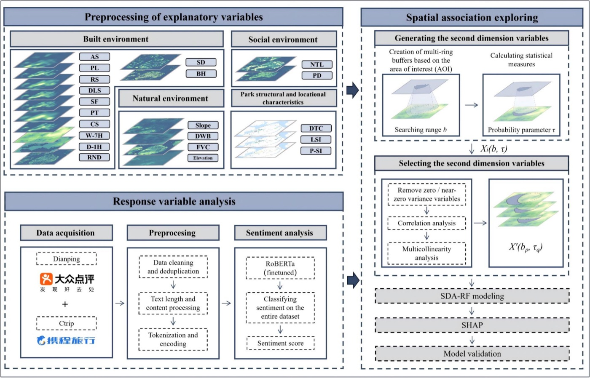
The explainable branch: second-dimension variables fed to a machine-learning
model and read with interpretation tools, so the effect of each (b, τ) can be inspected
rather than only scored.Published reference · SOH
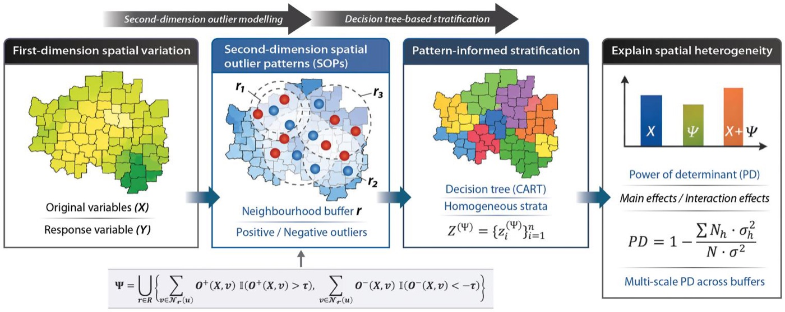
The heterogeneity branch: second-dimension outlier patterns used to explain
spatial heterogeneity, with its own tutorial in this
series.
What to edit
config/project-config.R — POINT_FILE, GRID_FILE, the
coordinate and response column names, and GRID_SURFACES for every surface your
grid carries. Set REFERENCE_VARS to those same surfaces so the pipeline uses
what it generates rather than the demo's pre-generated sets.
DIST_BUFFERS — the ranges to search, in km. Start from the scale of the
process, not from this demo's values, and let Step 5 tell you which range carries the
signal.
Nothing else. Run Rscript run-all.R test, then Rscript run-all.R,
and read results/selected-parameters.csv before drafting.
!Common pitfalls
Coordinates must be in degrees — the distance function is spherical, so projected metres
silently produce nonsense buffers. Select on training data only, and build the test matrix
with sda_newdata(...)[, names(sel)]; selecting on everything leaks the test set
into the choice of variables. Watch the cell count inside your smallest buffer, because
τ = 0 and τ = 1 over a handful of cells are noise. And keep the VIF walk:
with 440 near-duplicate candidates, dropping it produces a model that fits well and predicts
badly.
4.2 Write the Paper
The published applications share one architecture: a Methods section that defines the
second-dimension variable and states (b, τ), a Results section that mirrors the pipeline, and
every number pulled from a results/ file.
Manuscript section
Template output
Writing job
Methods
config/project-config.R, R/02-sda-core.R
define Xb,τ, state the searching ranges and quantiles searched, the selection rule and the VIF threshold, and the split
mirror the pipeline: which (b, τ) were selected → SDA against FDA on held-out data → the searching-range curve; every finding sentence carries a number
Discussion
results/buffer-sensitivity.csv, timing.csv
argue the scale the curve identifies, why the chosen quantiles are the ones they are, and state the computational cost honestly
Where each manuscript section draws its material from.
Manuscript skeleton (shared by the published applications)
manuscript outline
1 Introduction — spatial association from sample values; the information
outside samples; the contribution (3 aims)
2 SDA model — 2.1 First and second dimensions (concept, no case data)
2.2 Second-dimension variables X^{b,tau} (all formulas)
2.3 Variable selection (correlation ranking, VIF)
2.4 Modelling and validation design
3 Case & data — study area, response, surfaces, grid resolution
4 Results — 4.1 selected variables in (b, tau) space
4.2 SDA against FDA, more than one model
4.3 sensitivity to the searching range
4.4 spatial prediction over the grid
5 Discussion — the scale of the neighbourhood; why those quantiles;
computational cost; what SDA does not do
6 Conclusions — 6-8 sentences answering the aims
Results-to-manuscript map
Manuscript element
Source file
Shown in
Selected variables in (b, τ)
figs/fig01, tables/table-selected-variables.tex
§4.1
Main table (SDA vs FDA)
tables/table-cross-validation.tex
§4.2
Observed vs predicted
figs/fig02, fig03
§4.2
Searching-range curve
figs/fig04, results/buffer-sensitivity.csv
§4.3
Computational cost
figs/fig05, results/timing.csv
§5 / response to reviewers
Every manuscript element traces to one regenerable file.
4.3 Final Reproducibility Package
Code
R/02-sda-core.R (the method, base R) + the numbered pipeline + run-all.R + tests/
Data
data/obs.csv, data/grids.csv, the published variable sets in data/reference/, with provenance.md
Rscript run-all.R test passes — 21 checks, including that the generated
variables equal the published values and the selection equals Fig. 5(a).
Delete results/, tables/, figs/ and
data/derived/, re-run Rscript run-all.R — every number and
figure on this page regenerates (~6 s).
The searching ranges, quantiles, VIF threshold, split fraction and seed are stated in
the manuscript and match config/project-config.R.
Variable selection is reported as having been done on training data only.
env/session-info.txt is included in the deposit.
◆Anticipate the reviewer
Is this just adding more variables? → no: nine SDA variables against eight FDA
variables, and the b = 1 km row of buffer-sensitivity.csv scores
the same as FDA, so the gain is distance, not count. Why that searching range? →
figs/fig04. Did selection see the test set? → no, Step 4 selects
inside the training split. Is the improvement model-specific? → no, it holds for a
linear model and a random forest. How expensive is it? →
results/timing.csv.
Song Y (2022). The second dimension of spatial association.
International Journal of Applied Earth Observation and Geoinformation 111:102834.
doi:10.1016/j.jag.2022.102834
· PDF
(source of the concept, schematic, Fig. 5 and Fig. 6 reference images, and of the case
reproduced here)
Song Y (2023). SecDim: The Second Dimension of Spatial Association. R package
version 3.2.
CRAN archive
(the reference implementation and the source of the demo data)
Wang X, Wu Y, Shi T, Zhang R, Chen Y, Song Y (2026). Explainable second-dimension spatial
association between park sentiment and built-social environments.
PDF
Ren K, Song Y, Yu Q (2025). Second-dimension outliers for spatial prediction.
International Journal of Geographical Information Science.
PDF
Ren K, Song Y, Yang X, Wang X, Chen M, Yu Q (2026). Spatial outliers as a pattern
determinant for explaining heterogeneity.
International Journal of Geographical Information Science.
PDF ·
code
· tutorial